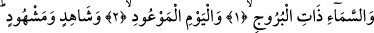
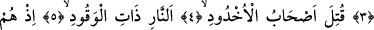
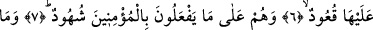
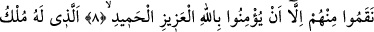
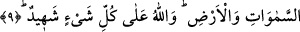

ASHÂB-I UHDUD’UN
İMÂNI
Bismillâhirrahmânirrahîm
1. Burçlara sâhip gökyüzüne,
2. Geleceği bildirilmiş olan güne,
3. (O günde) tanıklık edene ve edilene andolsun ki,
4. Hendeğe atılanlar (yakılarak) öldürüldü.
5. Ateşle dolu (hendeğe)
6. Onlar (yakanlar) da başlarına oturmuşlar,
7. Müminlere yapmakta oldukları işkenceyi seyrediyorlardı.
8. Onlardan, sırf, azîz ve hamîd olan Allah’a îman ettikleri için intikam aldılar.
9. Göklerin ve yerin mülkü kendisine âid olan Allah her şeyi görür (her şeye
şâhiddir.)
Bu âyette gökyüzü anlamında “semâ” kelimesi geçiyor. Arapçada insanın üzerinde ve
yukarısında olan herşeye semâ denir. Dolayısıyla gökyüzü de bu anlamda semâ
demektir. Bu anlam göz önüne alınınca arş da semâ kavramına dâhildir. Şu halde bu
âyette semaya yemin edilirken insanın üzerinde ve yukarısında bulunan arşa kadar bütün
gökyüzü buna dâhil olmuş olur. Bu âyetin bir diğer kelimesi “Burûc”dur. Burç
kelimesinin çoğulu olup anlamı köşk demektir. Âyette geçen burûc kelimesinden maksad
ise en yüksek felekte yer alan on iki burçtur. Bundan önce geçen sema kelimesiyle
kasdedilen de feleklerin feleğidir. Ancak Sâdî Müftî’nin görüşüne göre şeriat lisanında
bilinen feleklerin feleğine semâ isminin değil de arş isminin verildiğidir. Buradaki
sema kelimesiyle bize en yakın feleğin kasdedilmiş olması mümkündür. Nitekim Allah
şöyle buyurur: “Biz (dünyada) en yakın olan göğü kandillerle donattık.” (Mülk 67/5)
Ancak yukardaki görüşe bizim cevabımız semâ kelimesini incelediğimiz esnâda
geçmişti.